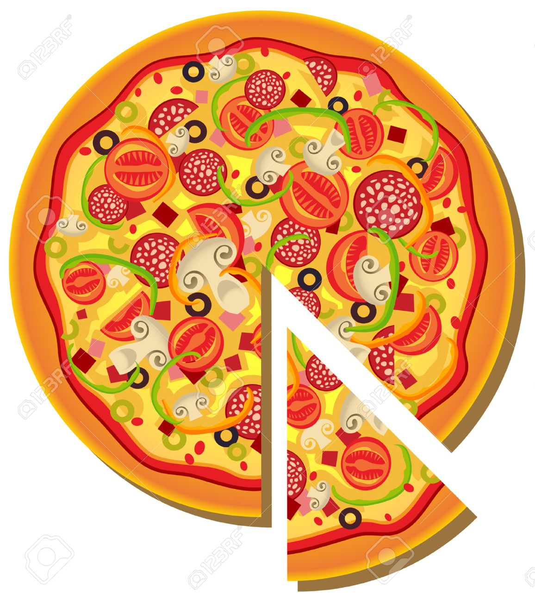
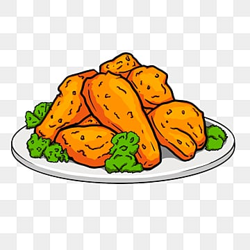
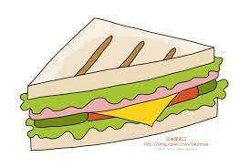
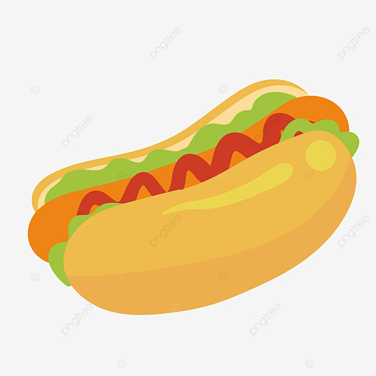
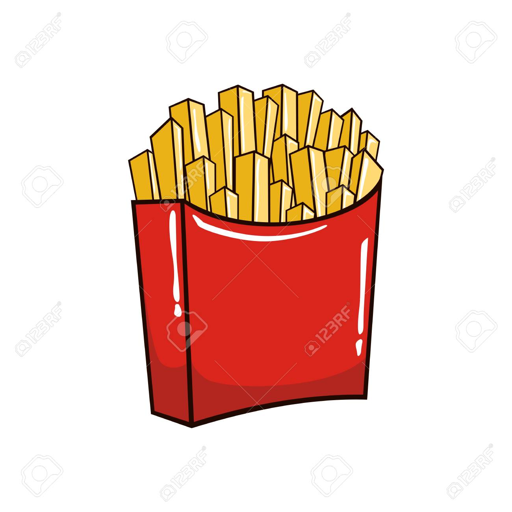

햄버거

햄버거는 고기 패티, 상추, 토마토, 치즈 등을 포함한 음식입니다. 주로 번들 빵에 넣어 먹습니다. 이 음식은 패스트 푸드로 유명합니다.
피자
피자는 도우 위에 토마토 소스, 치즈, 그리고 다양한 토핑을 얹어 구워 만든 이탈리아의 음식입니다. 다양한 종류의 피자가 있습니다.
치킨
치킨은 닭고기를 튀겨서 또는 구워서 만든 요리로, 다양한 향신료와 소스로 양념을 합니다. 치킨은 세계 각국에서 사랑받는 음식입니다.
샌드위치
샌드위치는 여러 가지 재료를 빵 사이에 넣어 만든 음식입니다. 고기, 채소, 치즈 등을 사용하여 다양한 맛을 즐길 수 있습니다.
핫도그
핫도그는 소세지를 빵에 넣고 다양한 소스와 토핑으로 마무리한 음식입니다. 길거리 음식 중에서도 인기가 높습니다.
감자튀김
감자튀김은 감자를 얇게 썬 후 튀겨서 만든 음식입니다. 바삭하고 부드러운 식감이 인기가 있는 간식입니다.